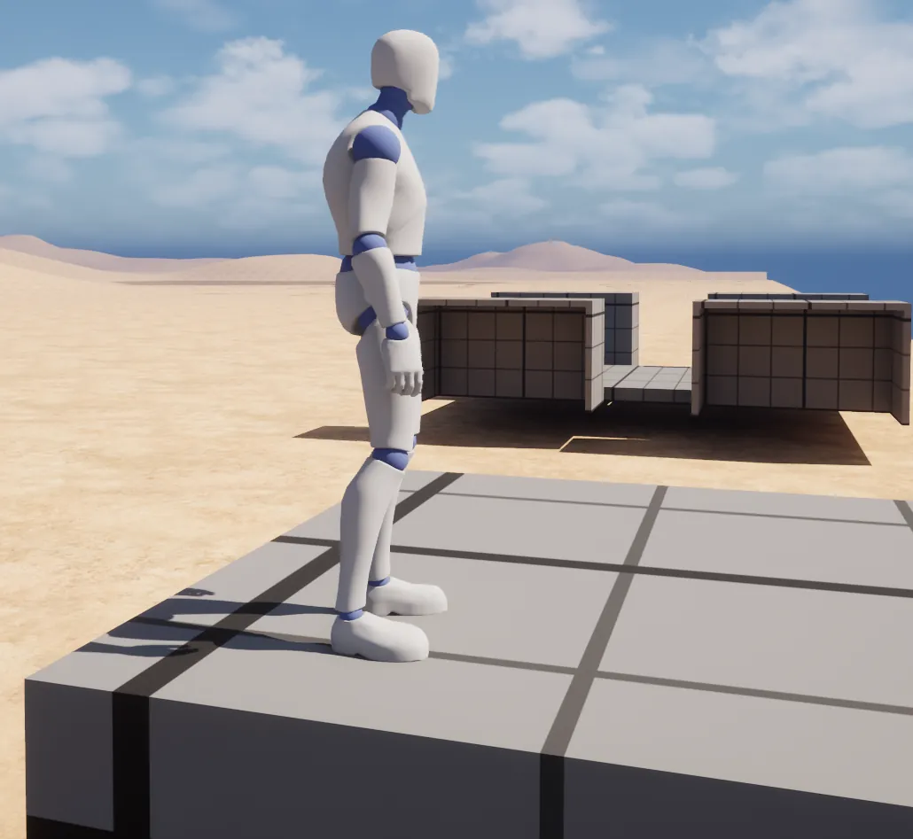

2026 Oct 12 – 2026 Oct 18
Building on a driving tank
A building system, a tank you can build on and drive, climbing onto it while it moves, the first multiplayer test, saved designs, and a level for the students to try it all.